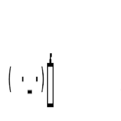
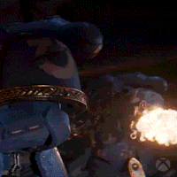
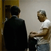

57 · 20 · 5 시간 전 · 원문
수집 당시 댓글 20개
플린태거트 · 14 시간 전
맛있는고구마 · 14 시간 전
댕멍꿀꿀 · 14 시간 전
윤아 · 6 시간 전
광구쟁이 · 5 시간 전
백식관음
Santa · 5 시간 전

아스톨포의몬스터캔 · 5 시간 전

꼬부욱 · 5 시간 전
모기장 안에 모기 몰아넣고 도망치지 못해 패닉 빠진 녀석을 직접 잡을 때의 쾌감.
칡쇼 · 4 시간 전
딱대
Ang마사냥꾼 · 4 시간 전
쨖
년째눈팅했읍니다 · 4 시간 전

sleeder · 4 시간 전
난 한손으로 위에서 아래로 내려침
슈리마불가촉천민 · 4 시간 전
집에 포충기 들려놓으니까 씨발 어벙한 새끼들은 다튀겨져서 죽고 세상 독한새끼들만 살아남아서 밤새.날 괴롭히더라
↳ 답글 · 켄트지 · 4 시간 전
포충기가 아니라 고독생성기였네
↳ 답글 · 킹꼬리원숭이 · 3 시간 전
신병훈련소
사실생각같은거안함 · 4 시간 전
야율아보기 · 4 시간 전
박수는 세로로 치세요
모닝푸딩 · 4 시간 전
거제굴톤파이리 · 1 시간 전
모기는 상하비행해서 좌우로 박수치는거보다 위아래로 박수치는게 잘잡힘아니면 엄마가 등짝 때릴때 처럼 위에서 아래로 후리면 바닥에 톡! 떨어짐
닉으로드립치고싶냐 · 19 분 전
아 위에서 아래로 박수쳐야하는거였구나한손으로 어쩐지 위에서 내려찍으면서 주먹쥐니까 잘잡히더라
댓글
수집 당시 댓글 20개
플린태거트 · 14 시간 전
맛있는고구마 · 14 시간 전
댕멍꿀꿀 · 14 시간 전
윤아 · 6 시간 전
광구쟁이 · 5 시간 전
백식관음
Santa · 5 시간 전

아스톨포의몬스터캔 · 5 시간 전

꼬부욱 · 5 시간 전
모기장 안에 모기 몰아넣고 도망치지 못해 패닉 빠진 녀석을 직접 잡을 때의 쾌감.
칡쇼 · 4 시간 전
딱대
Ang마사냥꾼 · 4 시간 전
쨖
년째눈팅했읍니다 · 4 시간 전

sleeder · 4 시간 전
난 한손으로 위에서 아래로 내려침
슈리마불가촉천민 · 4 시간 전
집에 포충기 들려놓으니까 씨발 어벙한 새끼들은 다튀겨져서 죽고 세상 독한새끼들만 살아남아서 밤새.날 괴롭히더라
· 켄트지 · 4 시간 전
포충기가 아니라 고독생성기였네
· 킹꼬리원숭이 · 3 시간 전
신병훈련소
사실생각같은거안함 · 4 시간 전
야율아보기 · 4 시간 전
박수는 세로로 치세요
모닝푸딩 · 4 시간 전
거제굴톤파이리 · 1 시간 전
모기는 상하비행해서 좌우로 박수치는거보다 위아래로 박수치는게 잘잡힘
아니면 엄마가 등짝 때릴때 처럼 위에서 아래로 후리면 바닥에 톡! 떨어짐
닉으로드립치고싶냐 · 19 분 전
아 위에서 아래로 박수쳐야하는거였구나
한손으로 어쩐지 위에서 내려찍으면서 주먹쥐니까 잘잡히더라